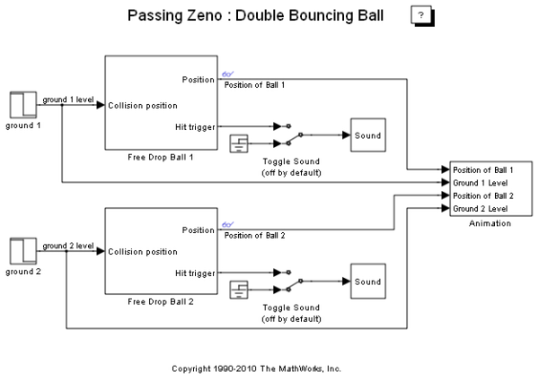
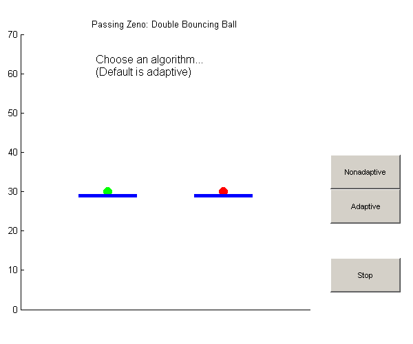
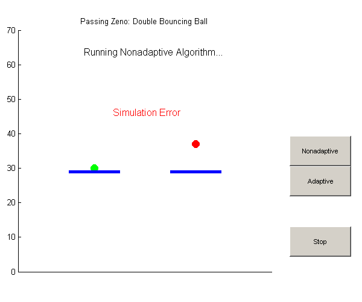
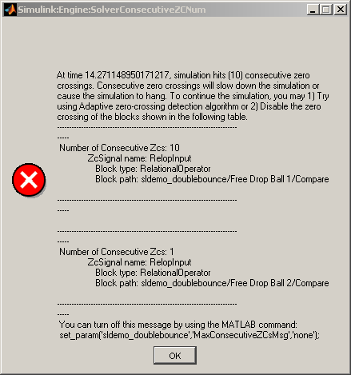
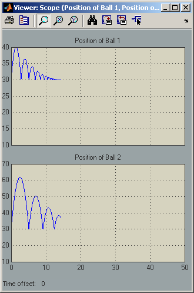
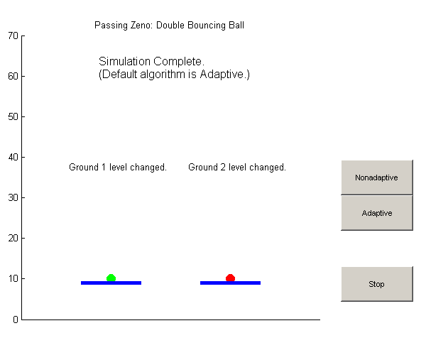

2 個の弾むボール: 適応ゼロクロッシング位置の使用
このデモでは、システムのダイナミクスに基づいて正しいゼロクロッシング位置アルゴリズムを選択する方法の例を示します。 Zeno 動的システム、つまり強力なチャタリングのあるシステムの場合は、[設定] ペインを通じて適応ゼロクロッシング検出アルゴリズムを選択できます。
--> ソルバー
--> ゼロクロッシング オプション
--> アルゴリズム: [非適応、適応]MATLAB® コマンド ラインで「sldemo_doublebounce」と入力することにより、このモデルを実行できます。
目次
2 個の弾むボールのシステム
このデモの Simulink® モデルは、2 個の弾むボールのシミュレーションに使用されています。 2 個のボールの運動は異なる初期速度を持つ床から始まり、それぞれの床の高さも、異なるタイミングで変化します。
 図 1: 2 個の弾むボールのモデルとアニメーション
2 個の弾むボールに非適応ゼロクロッシング位置アルゴリズムを使用
非適応ゼロクロッシング位置アルゴリズムを使用した場合、連続するゼロクロッシング エラーによってシミュレーションが停止します。 このシステムは実際、いわゆる「Zeno 動的システム」と呼ばれています。 どちらかのボールが床に非常に近い場合は、非常に短い間にあまりにも多くのゼロクロッシングが検出されるため、Simulink はハングします。
  図 2: 非適応ゼロクロッシング位置アルゴリズムを使用した場合の両方のボールの垂直変位
シミュレーションは完了せず、エラー メッセージが表示されます。 床の高さの変化イベントは観測できません。
2 個の弾むボールに適応ゼロクロッシング位置アルゴリズムを使用
適応アルゴリズムを選択した場合、プロセスが適応的にオン/オフされ、ゼロクロッシング時間が正確に特定されます。 位置がオン/オフされる条件は以下のとおりです。
1) ゼロクロッシング信号値がしきい値未満。 しきい値は [設定] ペインを通じて制御できます。
--> ソルバー
--> ゼロクロッシング オプション
--> アルゴリズム:[適応]
--> 信号のしきい値2) 連続するゼロクロッシング診断がヒット。連続するゼロクロッシングは [設定] ペインを通じて定義できます。
--> ソルバー
--> ソルバーの診断により以下のものが制御されます。
--> 時間の許容誤差と
--> 連続するゼロクロッシングの数 
図 3: 適応ゼロクロッシング位置アルゴリズムを使用した場合の両方のボールの垂直変位
シミュレーションは完了しました。 床の高さの変化イベントは観測できます。 イベント検索がオフになっている場合、警告が表示されます。